🌻 Introduction
Welcome to SoisFier. SoisFier helps your family build everyday routines: brushing teeth, packing the school bag, going to bed on time. Your child ticks off what they've done, an adult approves it, and their efforts become visible: stars, a growing flower, and rewards they look forward to.
Why it works
- Your child sees their progress: every good day makes their flower grow.
- They learn patience and saving: their stars are exchanged for rewards, big or small.
- The adults speak with one voice: parents, grandparents or a nanny follow and approve the same routines.
The principles
- An adult approves. A star only counts once it is approved. By default, what the child ticks is approved at midnight unless it has been declined (part 3).
- No need to be perfect. A good day means at least 75% of the day's stars.
- One flower per fortnight, more beautiful with each good day. The flowers make a flower bed each season and a garden each school year (part 4).
- Rewards that fit the child. Their price follows each child's pace (part 2c).
- The unexpected isn't penalised. Holiday or illness: schedule a break, and those days are neutral (part 3).
- Broken stars stay rare. For parents only, 3 stars at most, with no effect on the flower or the badges (part 2c).
- The child's phone doesn't need an account. A code given by a parent is enough (part 2d).
To get started, follow parts 1, 2a and 2b in order. Read the others when you need them. Tap any screenshot to enlarge it.
This English translation is being reviewed. In the screenshots, the week starts on Monday, the weekend is Saturday and Sunday, and all data is fictitious.
1 Installation and account
This part installs SoisFier on an Android phone and creates a parent's account, in about 10 minutes.
Before you start
- An Android phone with Chrome.
- An e-mail address you can open on this phone.
- The app's address: https://pyramid85cl209.github.io/SoisFier2/
- To join an existing family: the 6-character invitation code given by a parent.
The home screen
The home screen has everything you need to get started: sign in, create an account, connect a child's phone or install the app.
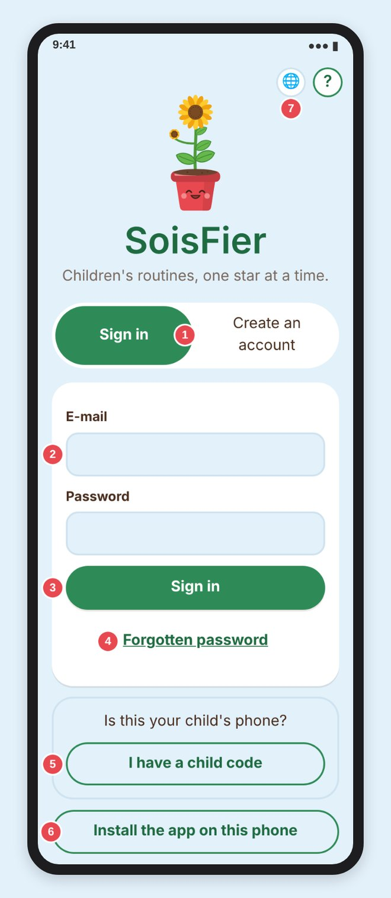
- Sign in / Create an account: switches between the two forms.
- E-mail and password: the parent's login details.
- Sign in: opens the parent area.
- Forgotten password: sends a reset link to the address entered.
- I have a child code: only on the child's phone (see step 4).
- Install the app on this phone: adds SoisFier to the phone's home screen.
- 🌐 Language: chooses the app's language on this device (see below).
Choosing the language
The 🌐 button is at the top of every screen, next to the “?” (and next to the padlock in child mode). The chosen language applies immediately, on this device only, and is also used for the reminders it receives. Each family member, and the child's phone, can use a different language.
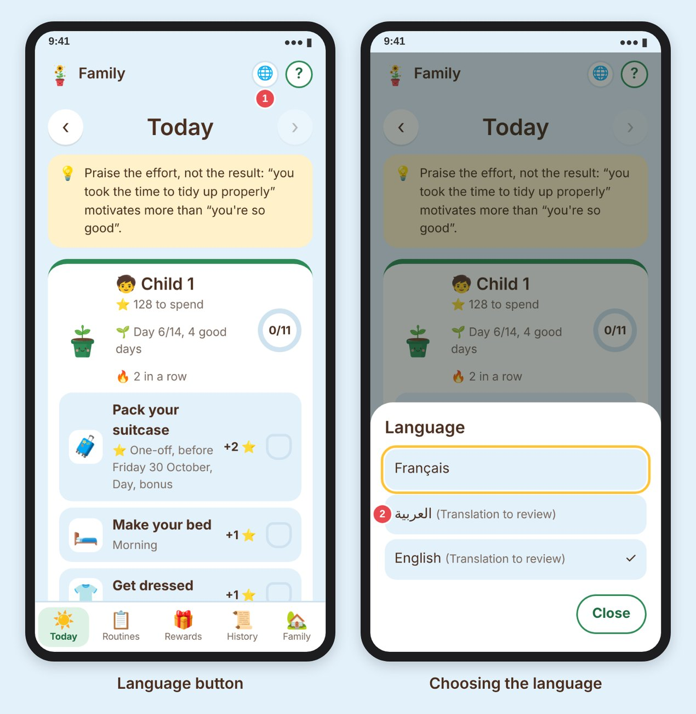
Step 1: install the app
Once installed, SoisFier opens like an app, without an address bar.
- Open https://pyramid85cl209.github.io/SoisFier2/ in Chrome.
- At the bottom of the home screen, tap Install the app on this phone (6). If the button doesn't appear: Chrome's ⋮ menu, then Add to home screen.
- In the window that opens, tap Install.
- The SoisFier icon appears on the phone's home screen. Open it: that's the one to use from now on.
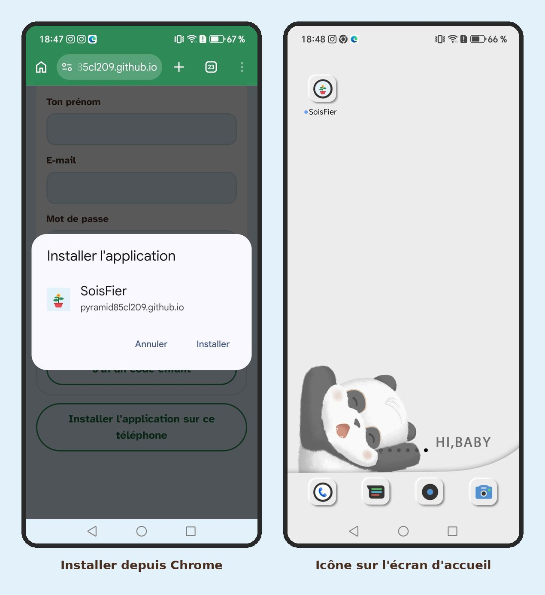
Step 2: create your account
Each adult has their own account, with their own e-mail. An account is created only once.
- Tap the Create an account tab (1).
- Enter your first name (2), your e-mail (3) and a password of at least 6 characters (4).
- Tap Create my account (5). The “Check your inbox” message appears: tap Got it.
- Open the “Confirm your email address” e-mail sent by Supabase Auth and tap the Confirm email address link.
- Go back to SoisFier, Sign in tab, and sign in with your e-mail and password.
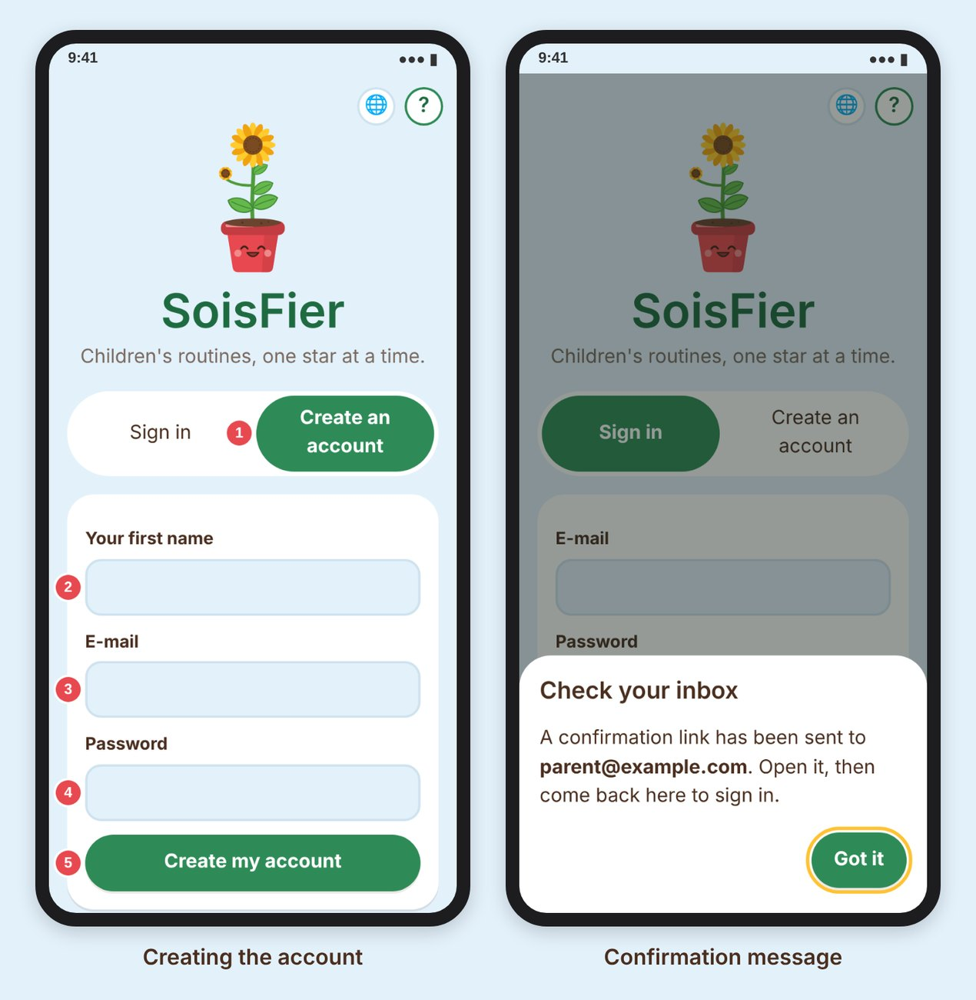
The confirmation link may open a page in the browser instead of the app. That's fine: the account is confirmed, just go back to the app to sign in.
Step 3: create or join your family
After your first sign-in, the “Welcome” screen asks you to create a family or join one. One parent creates the family; the other members join it with a code.
First parent: create the family
- Enter the family name (1).
- In I am (2), choose your relationship to the children: Dad, Mum, Grandad, Grandma, Uncle, Auntie, Godfather, Godmother or Nanny.
- Check the week settings (3): the app suggests the first day of the week, the weekend days and the time zone from the phone. Tap Edit to change them (see below).
- Tap Create (4).
Other members: join the family
- Ask a parent for an invitation code. They create it in Family > Invite a member, choosing your relationship and your rights (parent or helper). The code is valid for 48 hours.
- Enter the 6-character invitation code (5) and tap Join (6).
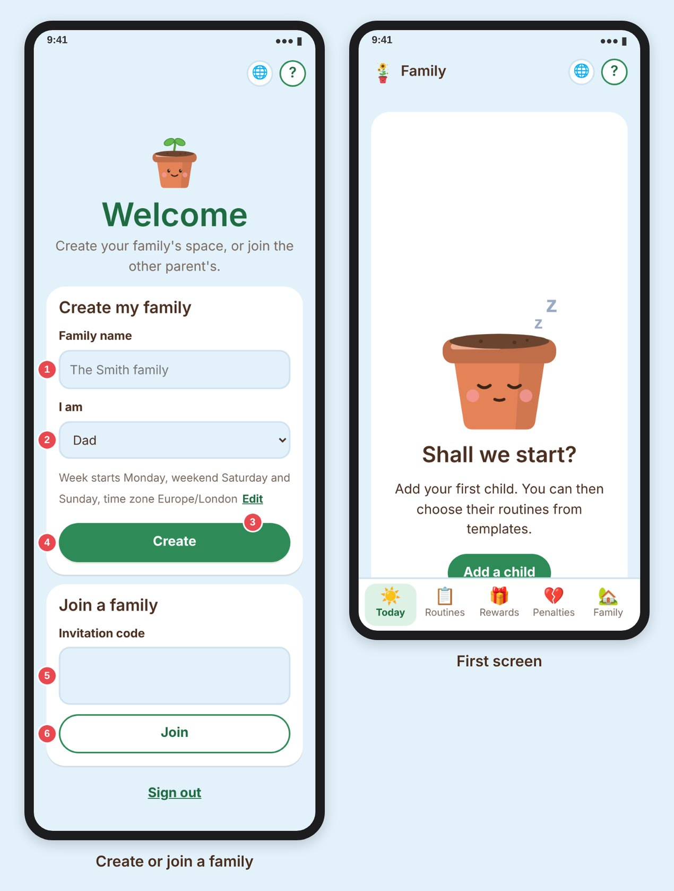
Week and time zone
These settings set the order of the days, the “Weekdays” and “Weekends” options, the week and weekend badges, the end of each garden fortnight and the time when a new day begins (automatic approval and reminders).
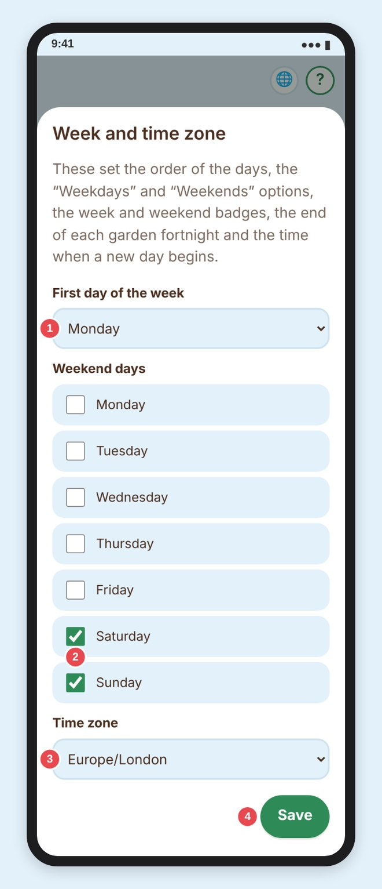
- First day of the week: for example Monday, Saturday or Sunday.
- Weekend days: up to 3 days, for example Saturday and Sunday.
- Time zone: for example Europe/London.
- Save.
You can change them later in Family > Week and time zone (part 5).
Step 4: first settings
The first screen, “Shall we start?”, invites you to add a child. The five tabs at the bottom (Today, Routines, Rewards, Penalties, Family) give access to everything else.
- ☐ Add a child: first name, avatar and the colour of their pot. Only the first name is stored.
- ☐ Choose their routines from the templates (morning, lunchtime, evening), then adjust the days and stars.
- ☐ Add rewards from the catalogue: prices are calculated from the child's pace.
- ☐ Invite the other parent and relatives: Family > Invite a member.
- ☐ Turn on reminders: Family > Reminders, then allow notifications.
- ☐ Create a 4-digit parent code: it protects leaving child mode.
Connecting the child's phone
- On a parent's phone: Family, then Connect their device next to the child's name. A 6-character code appears, valid for 15 minutes.
- On the child's phone: install the app (step 1), tap I have a child code, enter the code (1) then Connect this phone (2). The child doesn't need an account.
If the child uses a parent's phone, use Child mode here in Family instead: no code needed.
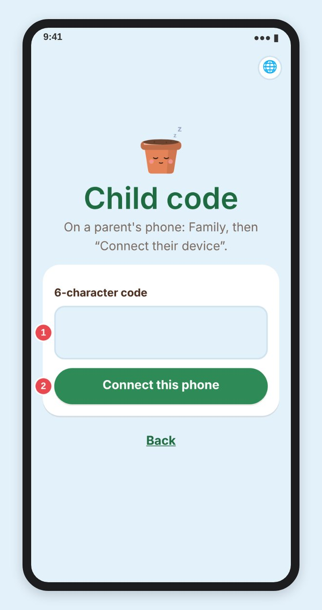
If something goes wrong
| Problem | Solution |
|---|---|
| Can't find the confirmation e-mail | Check your spam folder and search for “Supabase Auth”. Wait a few minutes before creating the account again. |
| “Incorrect e-mail or password” | Check the address, otherwise tap Forgotten password on the sign-in screen. |
| “First confirm your e-mail address” | Open the link in the Supabase Auth e-mail, then sign in again. |
| Invitation code or child code rejected | The code has expired (48 hours for an invitation, 15 minutes for a child): create a new one. |
| The install button doesn't appear | Chrome's ⋮ menu, then Add to home screen. |
| The old version still shows after an update | Close the app completely and reopen it, twice. |
| “Missing configuration” | The site is being deployed or was published incorrectly: try again later and tell the administrator. |
2a The Family page and the first child
This part introduces the Family page and adds the first child with their routines, in about 5 minutes.
It follows part 1: the app is installed, the account is created and the family exists. Only a parent can add a child; a helper sees the Family page without these buttons.
The Family page
The Family tab (at the bottom) brings together the children, the members and all the settings. The page is long: scroll down to reach the lower sections.
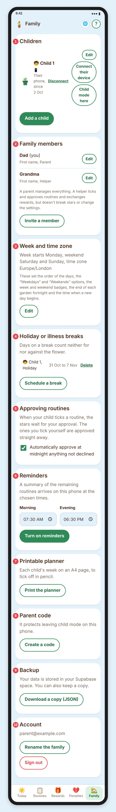
- Children: the list of children. Add a child is the first thing to do.
- Family members: each adult with their relationship (Dad, Mum…) and rights. Invite a member creates a code for the other parent or a relative.
- Week and time zone: the family's first day of the week, weekend days and time zone.
- Holiday or illness breaks: days on a break count neither for nor against the flower.
- Approving routines: when ticked, the box automatically approves at midnight anything nobody has declined. Leave it ticked to begin with.
- Reminders: choose a morning and an evening time, then tap Turn on reminders and allow notifications.
- Printable planner: each child's week on an A4 page, to tick off in pencil.
- Parent code: 4 digits asked for to leave child mode on this phone.
- Backup: downloads a copy of all the family's data.
- Account: rename the family or sign out.
Step 1: add a child
Only the first name is stored: no surname or date of birth.
- Tap Add a child, in the Family tab or on the “Shall we start?” screen.
- Enter their first name (1).
- Choose an avatar (2). It appears next to their name everywhere in the app.
- Choose the colour of their pot (3). With several children, a different colour for each helps tell their plants apart.
- Tap Add (4).
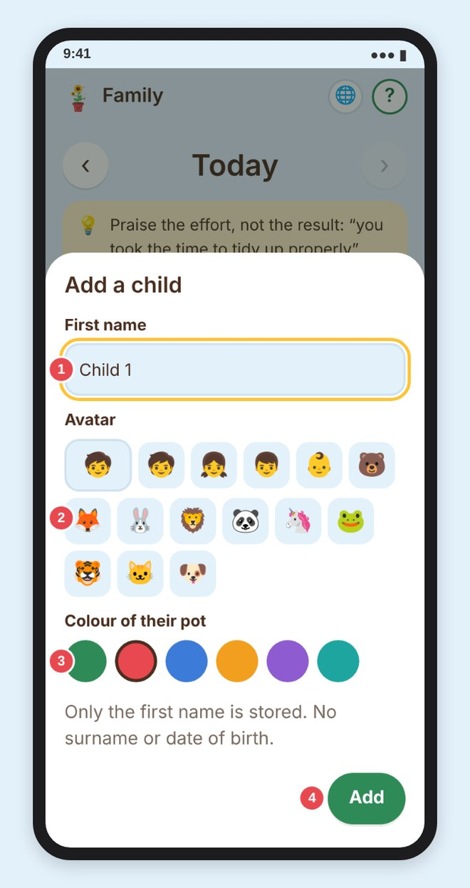
The name, avatar and colour can be changed later: Family, then Edit next to the child.
Step 2: choose their first routines
Straight after adding the child, the list of 22 routine templates opens, sorted by time of day: morning, lunchtime, during the day and evening.
- Scroll through the list and tick the routines that fit the child's day.
- Tap Add selection (1), at the bottom of the list.
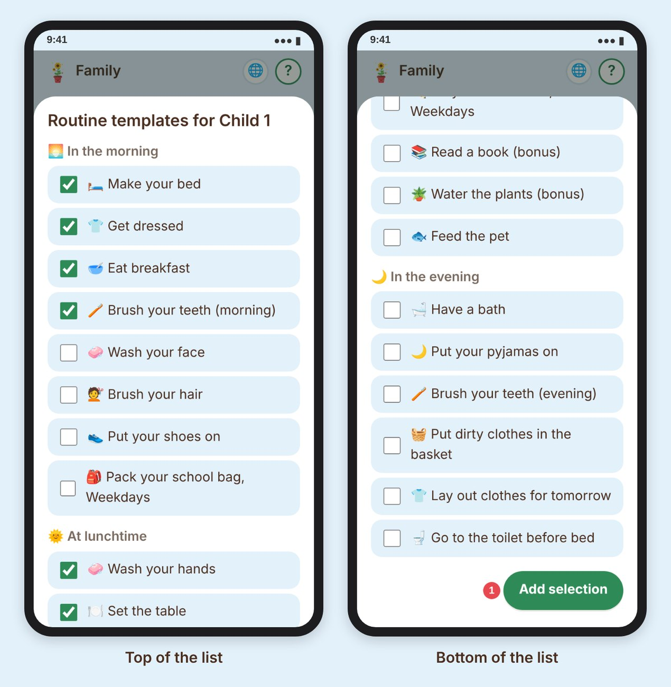
A few tips for choosing:
- Start small: 3 or 4 routines per time of day are enough for a young child. You can add more later.
- “Weekdays”: the routine is scheduled on school days only (school bag, homework), meaning the days not set as weekend.
- “Bonus”: the routine earns stars without counting towards a good day. Handy for little challenges.
- Each template comes with one or two stars and a place. You can adjust the days, stars and timer of each routine.
What next
The child appears in the Today tab with their pot and the day's routines. Their first flower starts the same day and opens on the last day of the week that falls at least 7 days later.
For a second child, repeat these two steps from Family > Add a child.
Continue with part 2b: editing a routine, creating a new one, setting the days, stars and timer, and adding a one-off routine.
2b Routines
This part explains how to add, create, edit and delete a child's routines, as well as one-off routines.
It follows part 2a: the child exists and has a few routines. Only a parent manages regular routines; a helper can also add one-off routines.
The Routines tab
The Routines tab shows the child's regular routines, sorted by time of day, then the one-off routines at the bottom of the page.
As long as the child has no routines, the tab shows a message suggesting you choose three or four from the templates. Start with Choose templates (1).
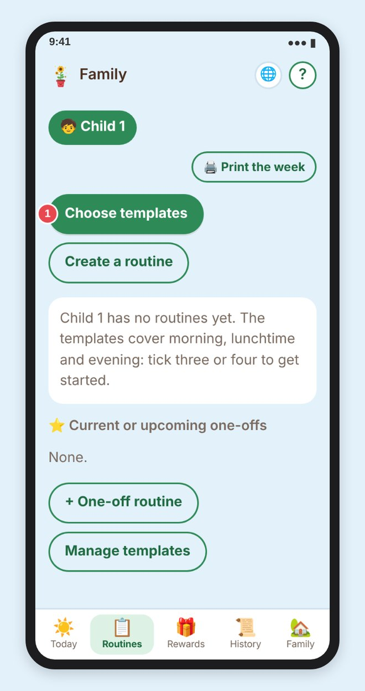
Once routines have been added, the tab looks like this:
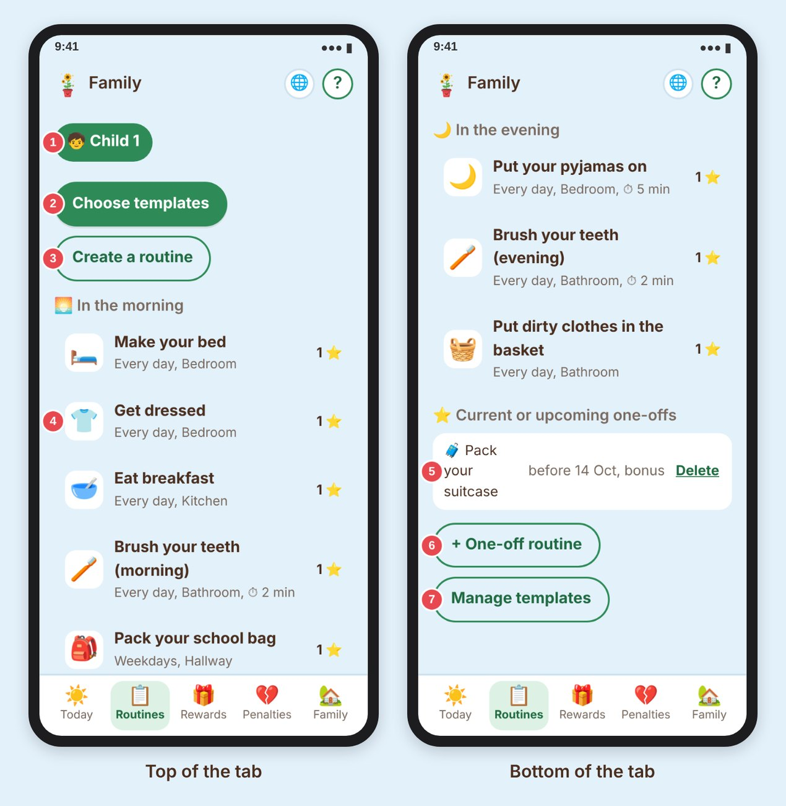
- Selected child: with several children, tap a name to switch between them.
- Choose templates: adds ready-made routines.
- Create a routine: a tailor-made routine.
- A routine: tap it to edit or delete it. Under its name: the days, the place and the timer; on the side: its stars.
- Current or upcoming one-offs: with their date, type and a Delete link.
- + One-off routine: a one-time task.
- Manage templates: one-off routines saved as templates.
Adding more templates
The templates remain available after the first selection, to complete the child's day.
- Tap Choose templates.
- Routines already added are greyed out with “already added” (1): they can't be added twice.
- Tick the new routines, then tap Add selection (2) at the bottom of the list.
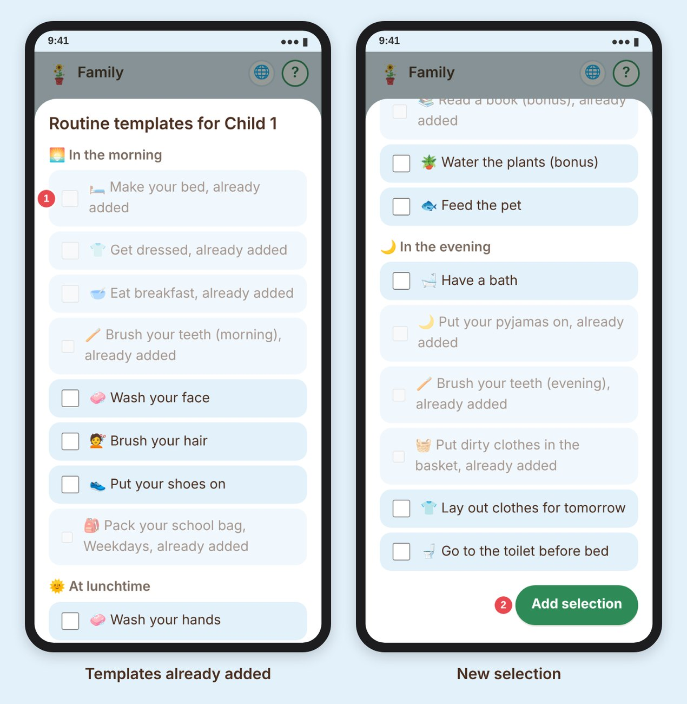
Creating a routine
Tap Create a routine for a routine that isn't in the templates, for example “Football practice”.
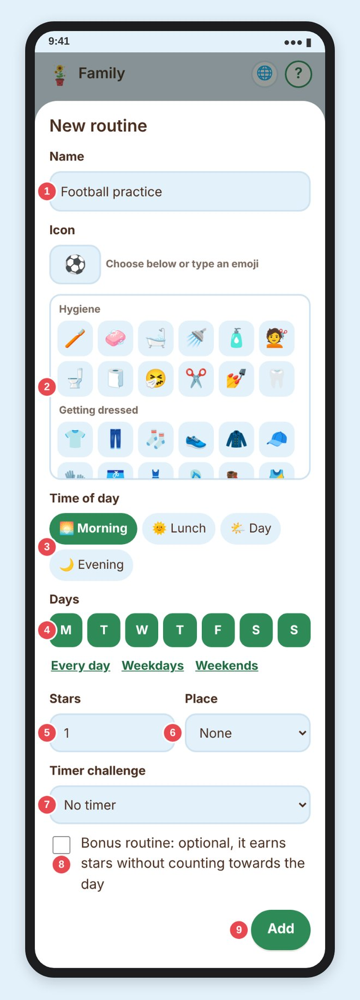
- Name: short and concrete, the child will read it every day.
- Icon: choose it from the list sorted by category (scroll through it), or type an emoji in the box.
- Time of day: morning, lunchtime, day or evening. It sets the group the routine appears in.
- Days: in green, the days the routine is scheduled, starting from the first day of the family's week. Tap a day to remove it, or use the shortcuts Every day, Weekdays and Weekends.
- Stars: from 1 to 5. The more effort a routine takes, the more stars it gives.
- Place: optional. It appears under the name to help the child find their way.
- Timer challenge: optional. A 2 to 30-minute timer the child can start to turn the routine into a challenge.
- Bonus routine: when ticked, the routine earns stars but doesn't count towards a good day.
- Add: the routine appears in the Routines tab and in the child's day.
Editing or deleting a routine
- In the Routines tab, tap the routine. The Edit routine form opens, already filled in.
- Change what you need: name, icon, time of day, days, stars, place, timer or “bonus”.
- At the bottom of the form, tap Save (2), or Delete (1) to remove the routine, then confirm.
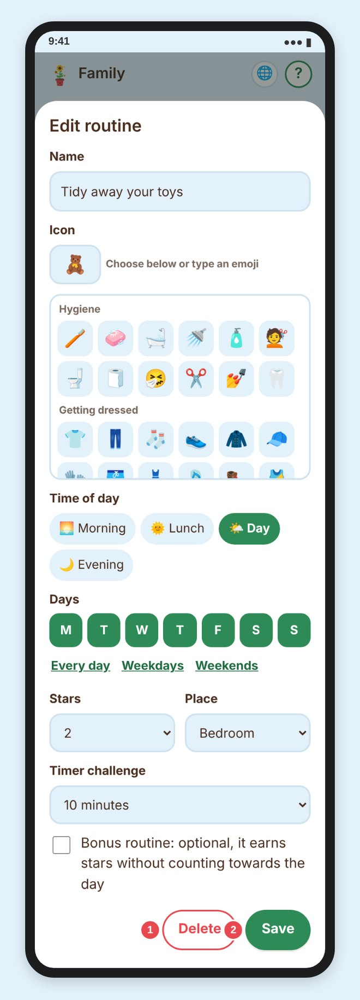
Deleting a routine removes it from upcoming days. The stars it earned are kept, and the plant doesn't go backwards.
Adding a one-off routine
A one-off routine is a one-time task: on a given day, or before a certain date. Parents and helpers can add one, from the Routines tab or from the child's card in the Today tab.
- Tap + One-off routine.
- Choose one of your templates (1), one of the ten suggestions, or tap Create a new one at the bottom of the list.
- Complete the form:
- Name (1) and icon, filled in if you started from a suggestion.
- When (2): On = that day only; Before = shows every day until it's done.
- Date (3).
- Type (4): Bonus (by default) earns stars without spoiling the day; Required counts towards a good day.
- Stars and time of day (5).
- Keep as a template (6): tick it for a task that will come up again. It will appear at the top of the list next time.
- Tap Add (7).
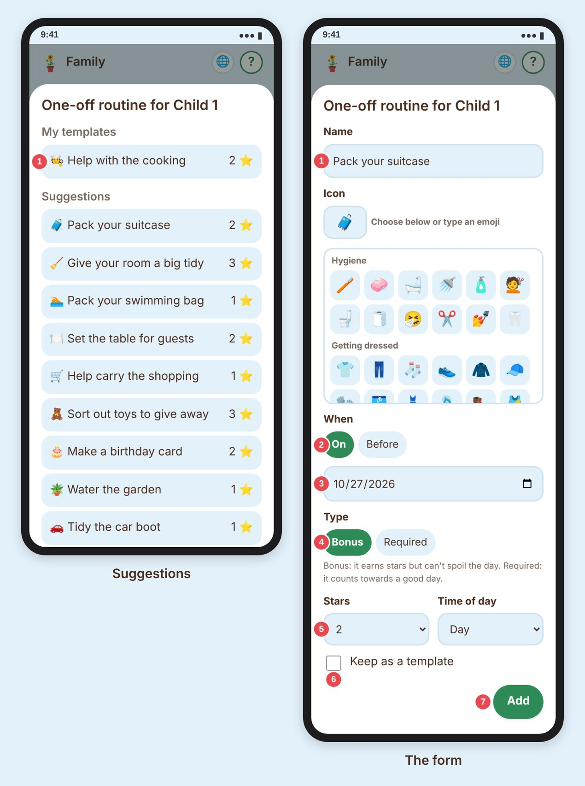
The routine appears in the “Current or upcoming one-offs” section, then disappears once its date has passed. To delete a template you no longer need: Manage templates.
The result in the Today tab
The day's routines appear in the Today tab, on the child's card. The counter (1) shows the routines done out of the total (here 0/11), and the line under the name (2) shows the flower's progress.
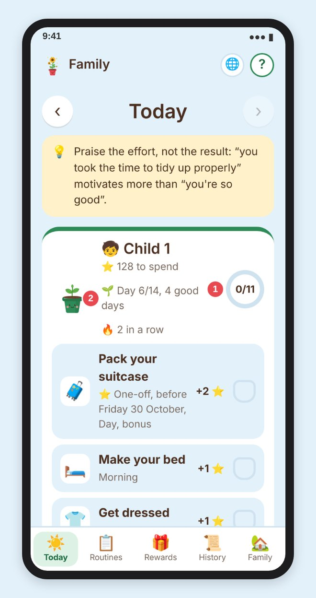
Continue with part 2c: rewards and broken stars.
2c Rewards and broken stars
The Rewards tab sets what the child can get with their stars. Prices are calculated automatically from their pace. This part follows parts 2a (creating the child) and 2b (creating the routines): without routines, the pace is zero and no price can be calculated.
How prices work: effort time × pace. The pace is the average number of stars the child earns per day, that is 75% of the stars scheduled over the week divided by 7. With a pace of 11.4 ⭐ a day, a 1-day reward costs about 11 ⭐ and a 1-month reward about 340 ⭐. The price is rounded, then fixed when the reward is created; it doesn't change if the routines change afterwards.
The Rewards tab
Open the Rewards tab in the bottom bar. It shows the selected child's balance of stars to spend and their pace.
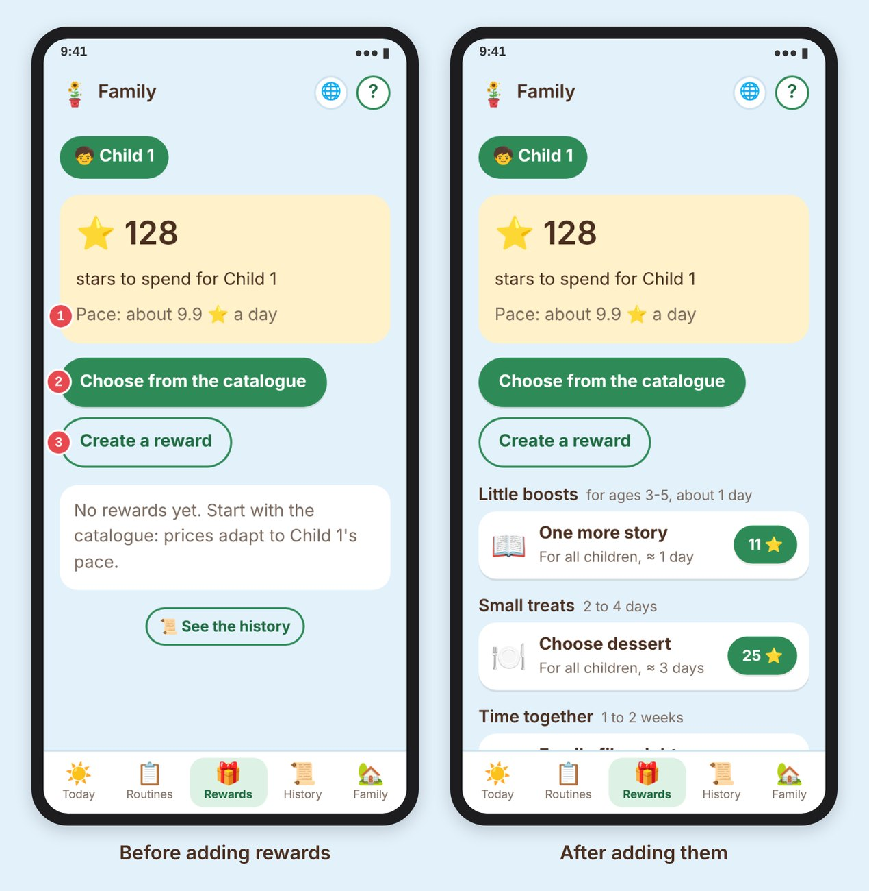
- Pace: average stars earned per day (here about 9.9). It's the basis for every price.
- Choose from the catalogue: the quickest way to start.
- Create a reward: a reward of your own.
Once filled, the list is sorted by level, from cheapest to most expensive. Each card shows who it's for, the approximate effort time and the price. An event also shows its date.
Choosing from the catalogue
The catalogue offers ready-made rewards sorted into six levels. The prices shown are already calculated for each child.
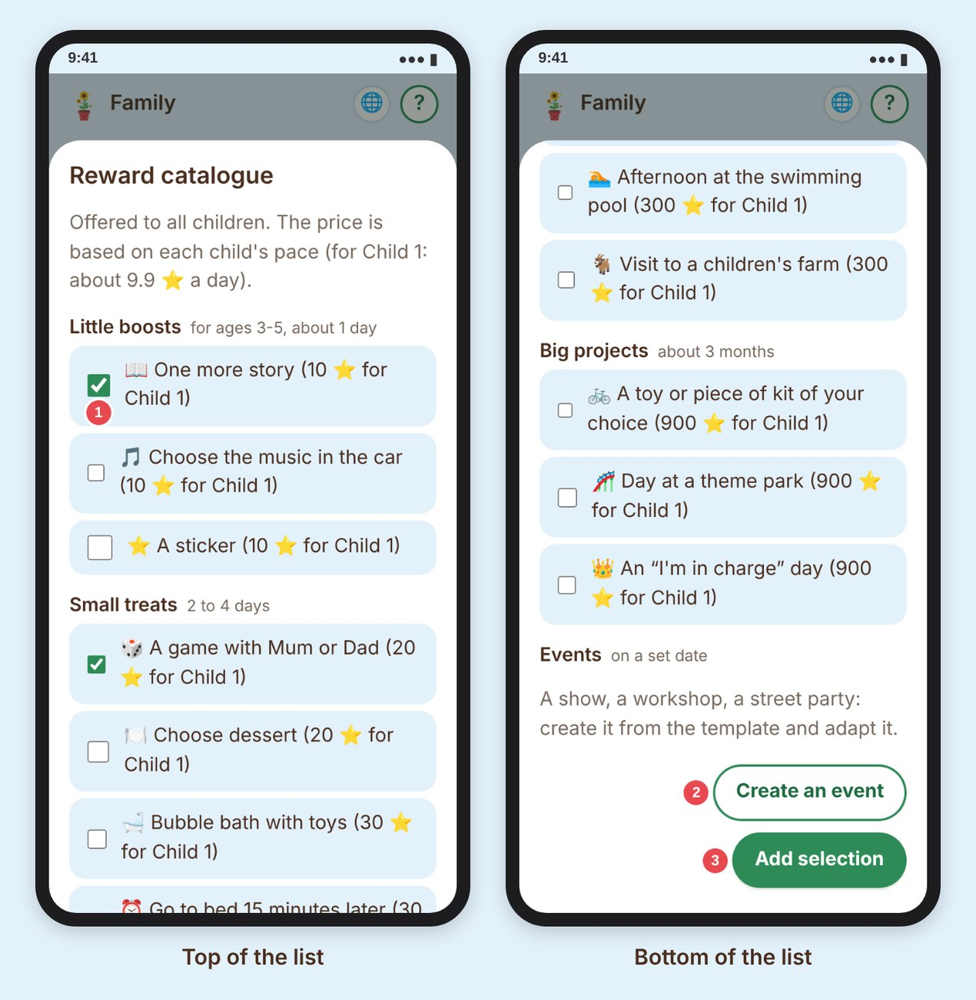
- Tick the rewards that suit you, across all levels.
- Create an event opens the event form, already filled in.
- Add selection adds everything ticked in one go. The rewards added are for all children, each at their own price.
| Level | Effort time | Example (pace 11.4) |
|---|---|---|
| Little boosts | about 1 day, for ages 3-5 | One more story: 11 ⭐ |
| Small treats | 2 to 4 days | Choose dessert: 25 ⭐ |
| Time together | 1 to 2 weeks | Family film night: 160 ⭐ |
| Outings | about 1 month | Visit to a children's farm: 340 ⭐ |
| Big projects | about 3 months | A toy or piece of kit of your choice: 1000 ⭐ |
| Events | on a set date | A show or workshop: created by hand |
You can come back to the catalogue at any time to add more.
Creating a reward or an event
The form is the same for a reward and an event. Only the level changes: an event is a reward in the “Events” level, with a date.
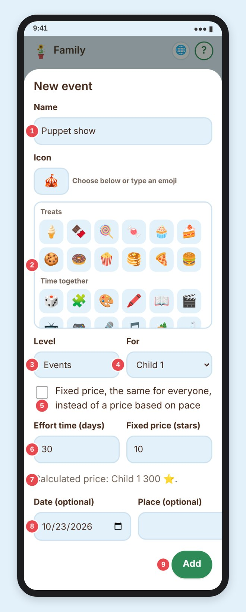
- Name: what the child will see, for example “Puppet show”.
- Icon: tap an icon in the grid or type an emoji.
- Level: from “Little boosts” to “Events”. Used for sorting, it suggests a default effort time.
- For: the child concerned.
- Fixed price: tick this box for a single price for everyone instead of a price based on pace.
- Effort time (days) if the box is unticked, or Fixed price (stars) if it is ticked. Only one field counts.
- Calculated price: a preview of the price for each child. Here 30 days × 9.9 ⭐, rounded to 300 ⭐.
- Date and Place: optional. For an event, set the date; it shows on the card.
- Add saves the reward to the list.
Tip: for an event, choose an effort time that gives the child time to save up before the date. A show in 10 days ≈ 10 days of effort.
Broken stars
A broken star takes 1 to 3 stars from the balance to spend, for an immediate slip. The balance never goes below zero, and neither the plant nor the badges are affected. Only a parent can break a star.
The Penalties tab
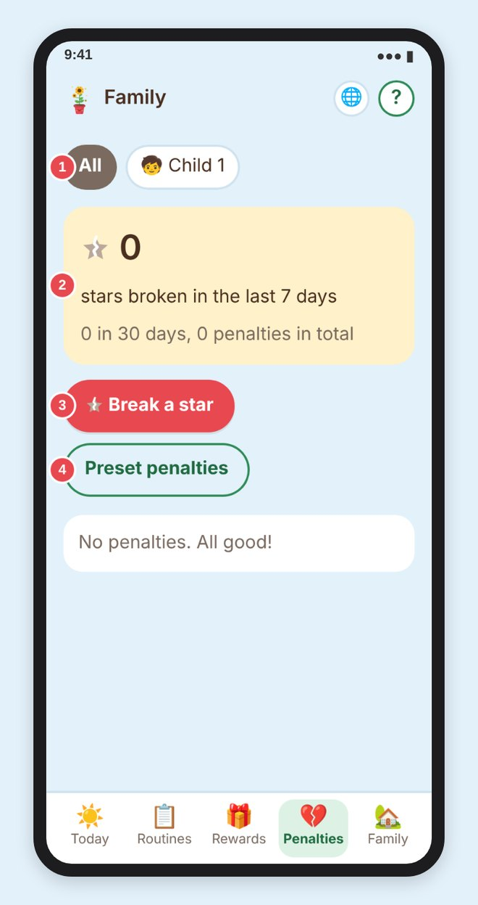
- All / child: filters the history. The broken star applies to the selected child.
- Counter: broken stars over 7 days, over 30 days and in total.
- Break a star: applies a broken star.
- Preset penalties: the list shared by the parents.
If the child has no stars to spend, the app says so: there's nothing to break.
Preparing preset reasons
Preset reasons apply to all children. They make sure the same behaviour costs the same whichever parent is there. Do this once before the first broken star.
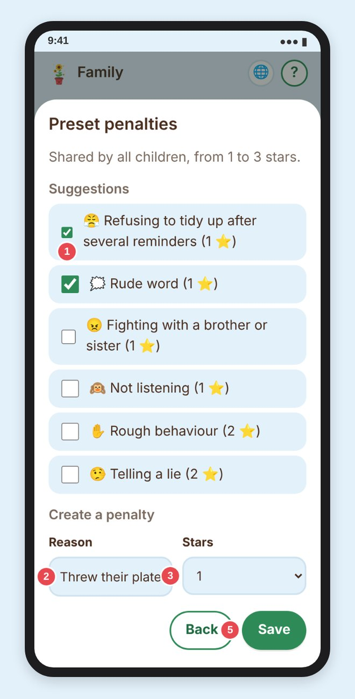
- Tick the suggestions that suit you.
- Reason: for a reason of your own, type it here.
- Stars: choose 1, 2 or 3.
- Back returns to the “Break a star” window without saving.
- Save adds the ticked boxes and the typed reason in one go.
Saved reasons move to the top of the list with a Delete link. A reason typed by hand gets the broken heart icon.
| Suggestion | Stars |
|---|---|
| Refusing to tidy up after several reminders | 1 |
| Rude word | 1 |
| Fighting with a brother or sister | 1 |
| Not listening | 1 |
| Rough behaviour | 2 |
| Telling a lie | 2 |
Breaking a star
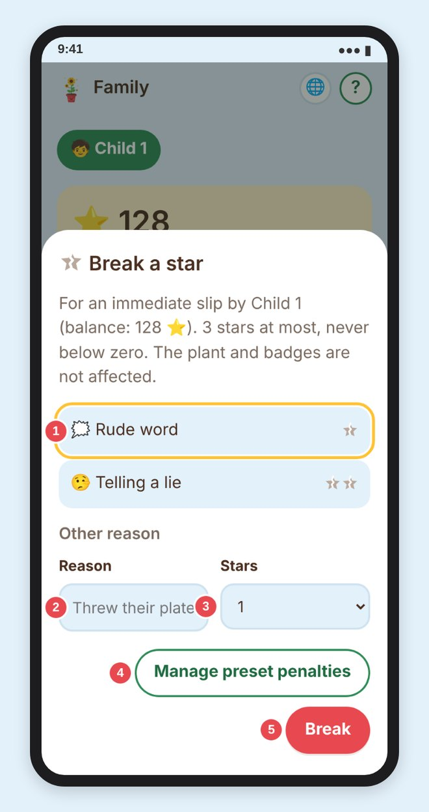
- Tap a preset reason: it applies straight away, with no further confirmation.
- Other reason: for an unexpected situation, type the reason.
- Stars: 1, 2 or 3.
- Manage preset penalties opens the shared list.
- Break applies the other reason.
The text at the top of the window reminds you of the child's current balance.
History and cancelling
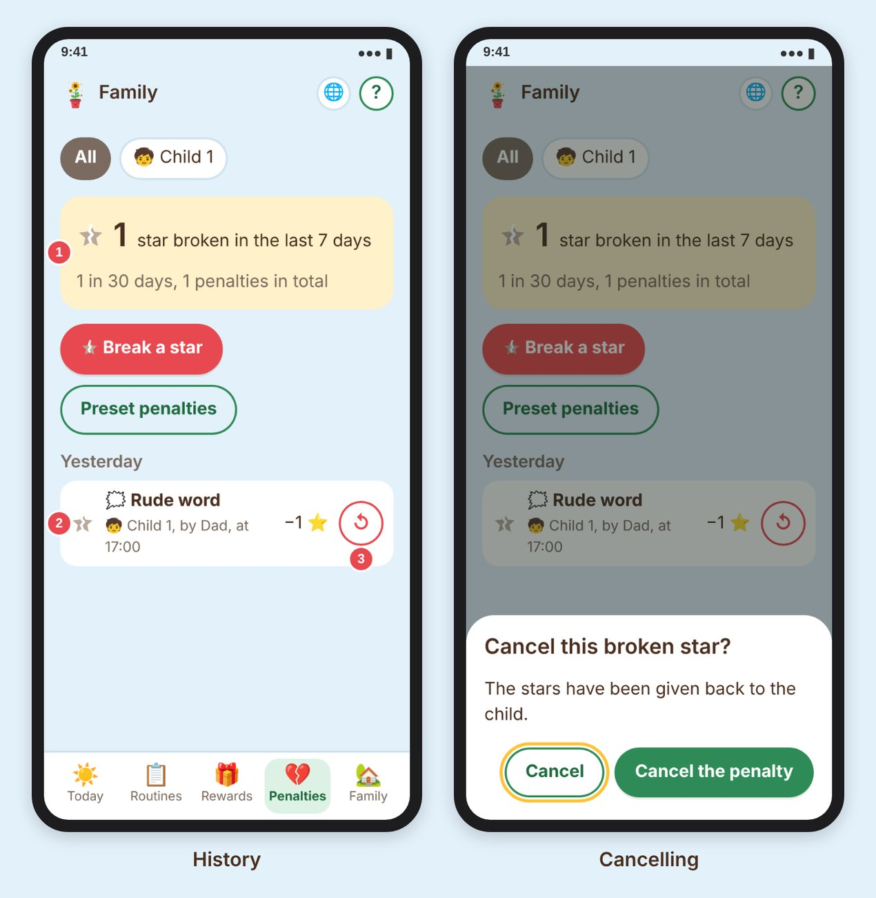
- The counter updates.
- The history is sorted by day, most recent first. Each line shows the reason, the child, the parent who broke the star, the time and the number of stars.
- Cancel (circular arrow): after confirming, the stars are given back to the child. Useful if you picked the wrong child or reason.
2d Members and the child's phone
The Family tab is used to invite the adults who look after the child and to connect the child's phone. This part follows part 2a (creating the child).
There are two levels of rights:
| Rights | What they can do |
|---|---|
| Parent | Everything: routines, rewards, broken stars, members, phones, settings. |
| Helper | Tick and approve routines, exchange rewards. Doesn't break stars or change the settings. |
Each approval keeps the name of the person who made it, so you know who approved what.
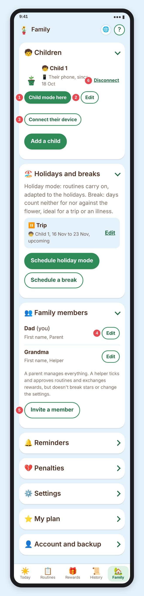
- Edit the child.
- Connect their device: the child's phone.
- Child mode here: your phone switches to child mode.
- Edit a member.
- Invite a member.
- Disconnect: shown under the child for each connected phone.
Inviting a member
Invitations use a 6-character code valid for 48 hours. Only a parent can invite.
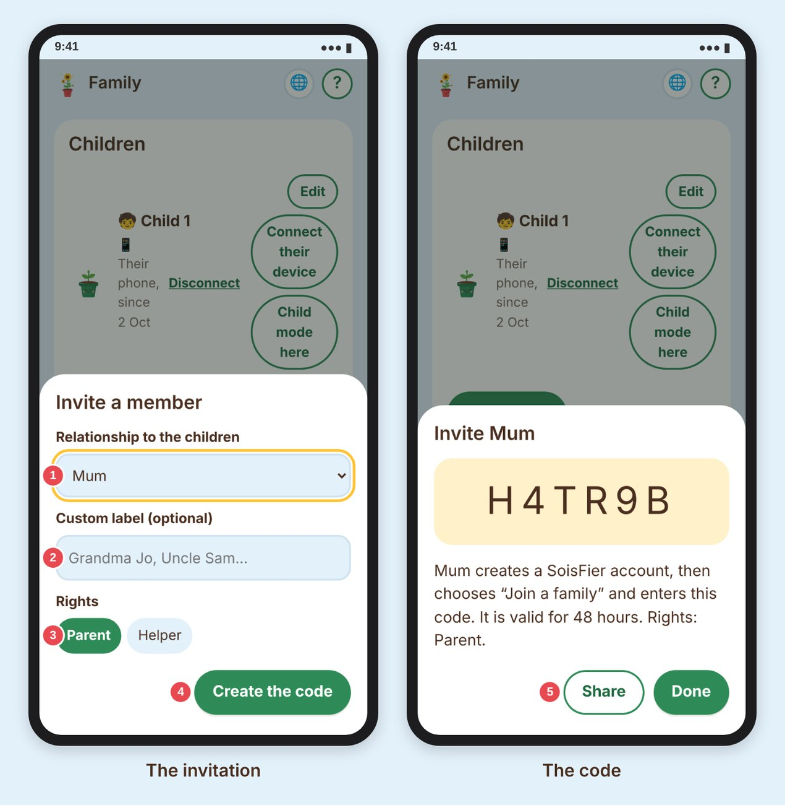
- Relationship to the children: Dad, Mum, Grandad, Grandma, Uncle, Auntie, Godfather, Godmother, Nanny or Other.
- Custom label (optional): the name shown, for example “Grandma Jo”. Useful when there are two grandmothers.
- Rights: parent or helper (see the table above).
- Create the code shows the invitation code.
- Share sends the code by text message, WhatsApp or e-mail. Otherwise, read it out.
If the code expires before it is used, simply create a new one.
For the invited person: joining the family
The invited person does these steps on their own phone.
- They install SoisFier and create their account as in part 1.
- On the Welcome screen, they skip “Create my family” and scroll down to Join a family (see the step 3 screenshot in part 1).
- They enter the invitation code, then tap Join.
- They arrive on the Today screen, with the children and routines in place. The relationship and rights chosen in the invitation apply automatically.
Careful: don't create a second family by mistake. The children and routines wouldn't be shared.
Editing or removing a member
Tap Edit next to the member. Everyone can change their own relationship and label. Rights and removing another member are for parents only.
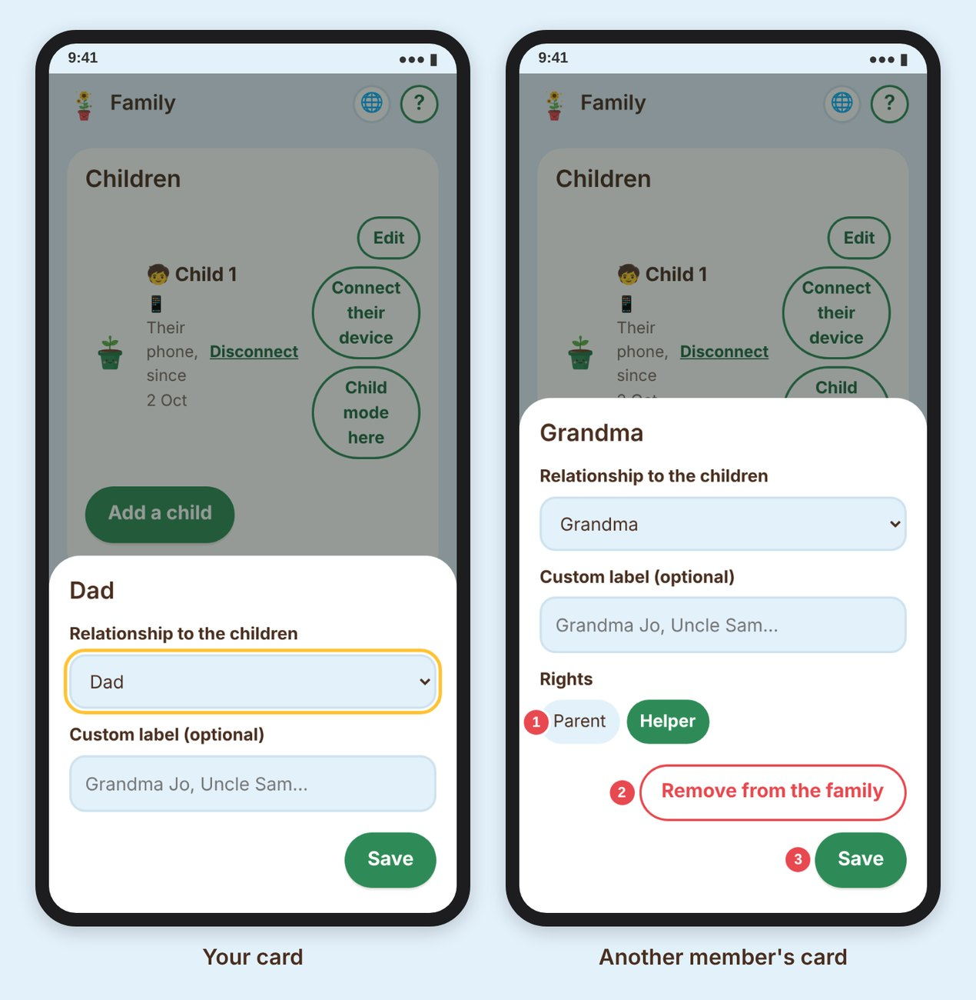
- Rights: change a member from parent to helper, or the other way round.
- Remove from the family: after confirming, the person no longer has access to the family. The history of their approvals is kept.
- Save confirms the changes.
Your own card has no rights or removal: a parent can't lower their own rights or remove themselves by mistake.
Connecting the child's phone
The child has no account and no e-mail: their phone is connected with a single-use code, valid for 15 minutes.
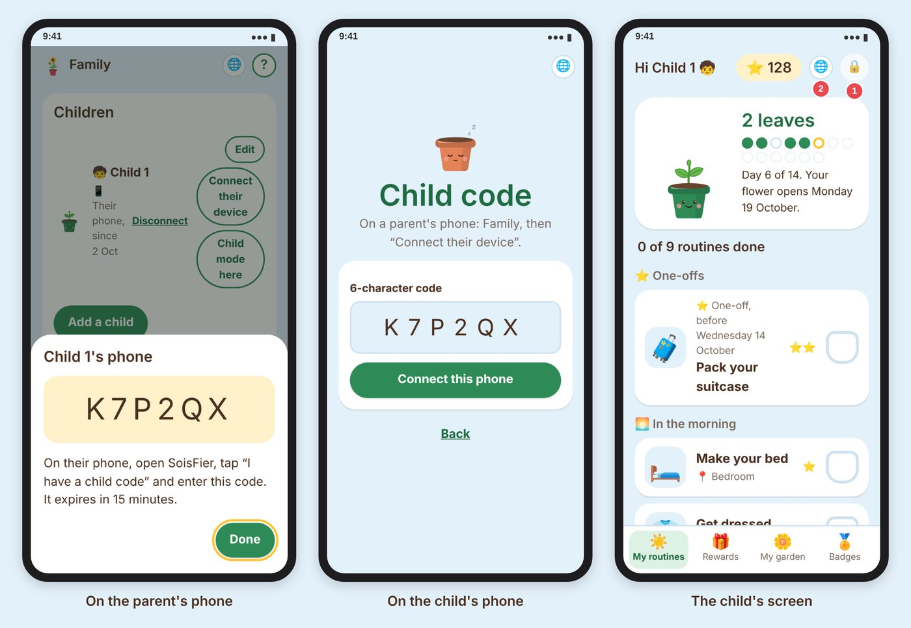
- On your phone: Family, then Connect their device under the child. A 6-character code appears.
- On the child's phone: open SoisFier and tap I have a child code on the sign-in screen (see part 1).
- Enter the code, then tap Connect this phone.
- The child arrives on their screen: their name, stars, pot and the day's routines. The padlock (1) lets a parent disconnect this phone. The 🌐 button (2) chooses this phone's language.
- On your phone, tap Done. The phone appears under the child on the Family page.
To remove a phone (lost, replaced, an old test): Disconnect on its line, then confirm. A new code will be needed to reconnect it.
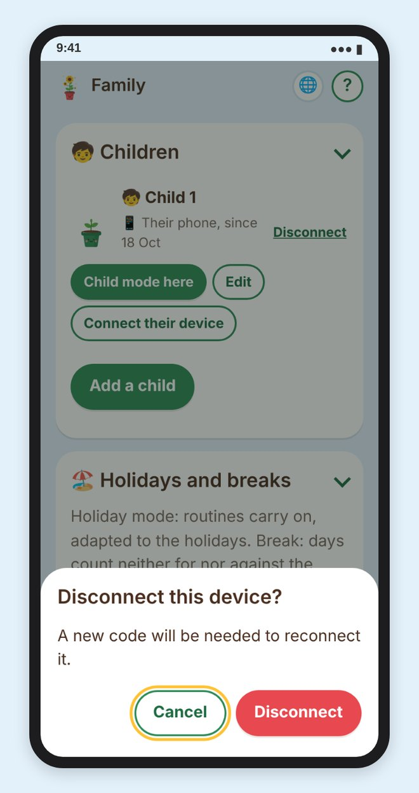
Child mode on your phone
For a child without a phone, your phone can switch to child mode while they tick their routines.
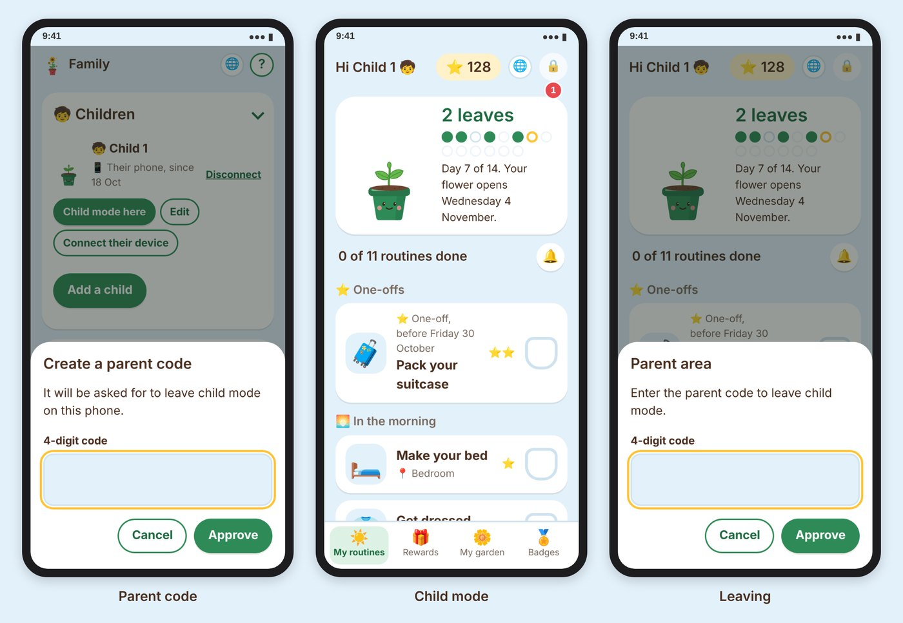
- Family, then Child mode here under the child.
- The first time, create a 4-digit parent code. It will be asked for to leave child mode on this phone; don't give it to the child.
- The child's screen appears, just as on their own phone.
- To go back to the parent area, tap the padlock (1) and enter the parent code.
The phone appears under the child as “Dad's phone (child mode)”. Going back into child mode reuses the same line instead of creating a new one.
Editing a child
Tap Edit under the child to change their name, avatar or pot colour.
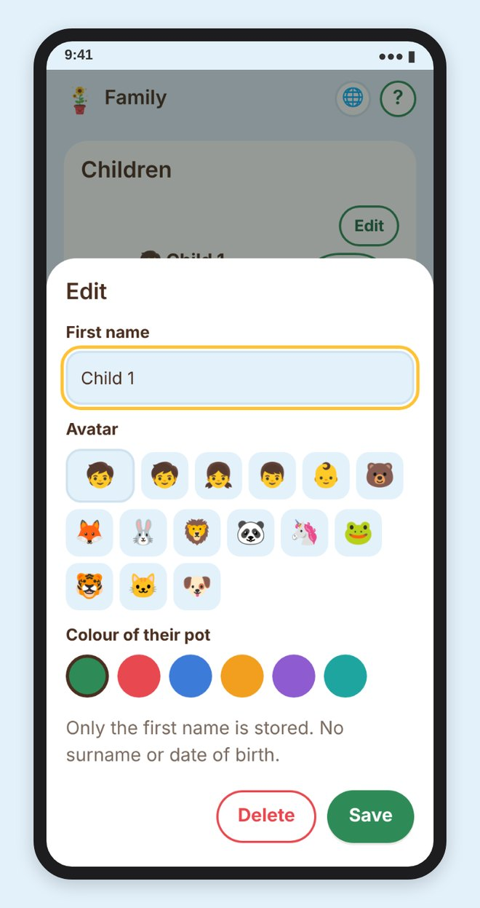
Only the first name is stored: no surname or date of birth. Delete erases the child together with their routines, stars and garden. Only use it for a child created by mistake.
3 A parent's daily routine
Every day, a parent does three things: tick or approve routines, exchange rewards and, when needed, schedule a break. Everything happens in the Today and Rewards tabs; broken stars are in part 2c.
The rule to remember: a star only counts once it is approved by an adult. Anything not declined is approved automatically at midnight, in the family's time zone.
The Today screen
This is the opening screen. For each child it shows the routines scheduled that day.
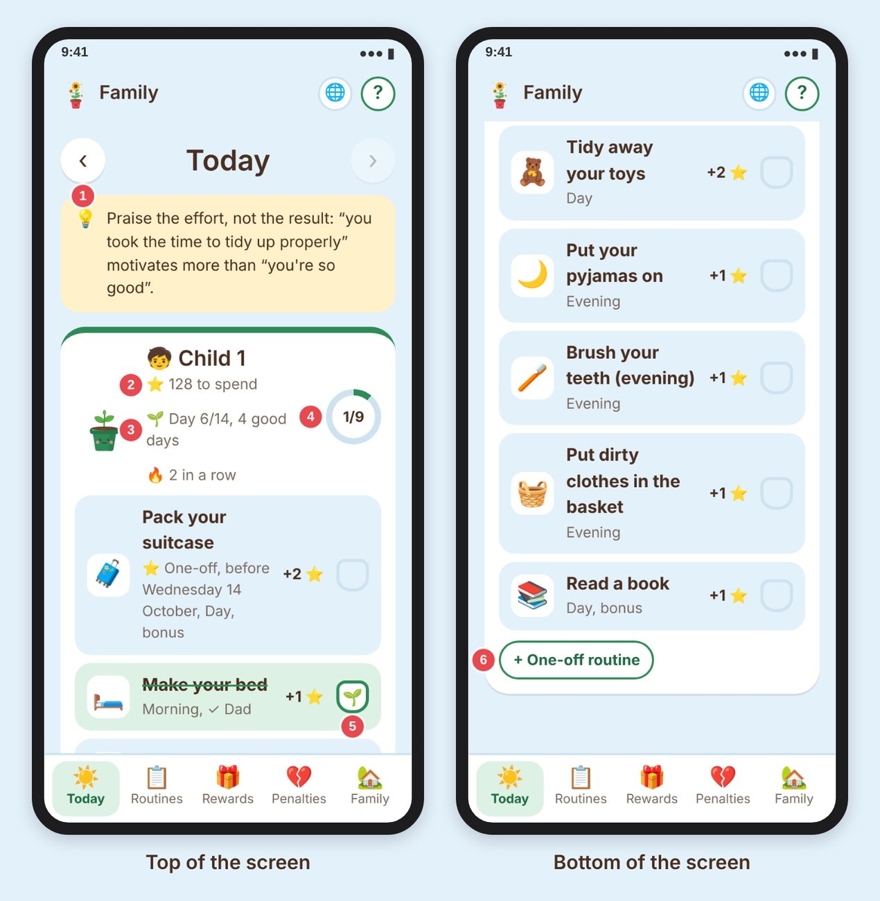
- Arrows: go back up to 6 days to tick a forgotten routine. You can't go into the future.
- To spend: the child's star balance.
- Day 6/14, 4 good days: the current flower's progress and its number of good days.
- Counter: routines done out of the day's total.
- Tick box for each routine.
- + One-off routine: adds a one-time routine (part 2b).
The light-bulb banner gives a different tip each day. It only shows on the current day.
Ticking and approving routines
It all depends on who ticks:
| Who ticks | What happens |
|---|---|
| An adult, from the Today screen | The routine is approved straight away: it turns green with “✓ Dad”. |
| The child, from their phone or in child mode | The routine moves to the To approve section at the top of the Today screen. |
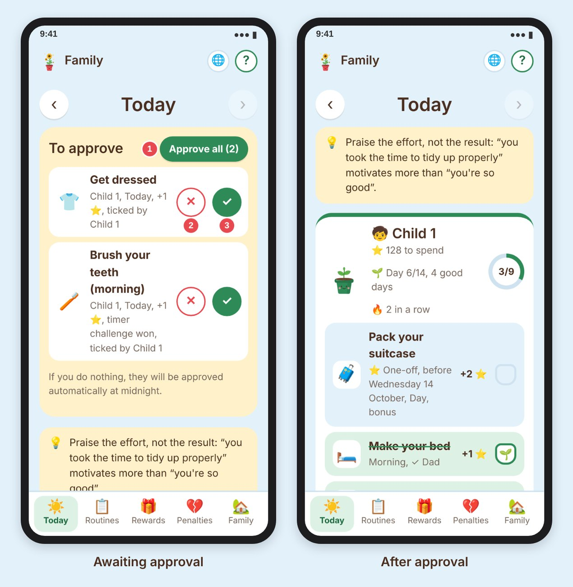
- Approve all approves all waiting routines in one go.
- Decline (✕): the routine needs doing again, with no penalty. No stars are given.
- Approve (✓): the stars are added to the balance and count towards the flower.
Each line shows the child, the day, the stars and who ticked the routine. If you do nothing, everything left is approved automatically at midnight.
Ticked by mistake? Tap the box again within 5 minutes to untick it. After that the routine is approved for good; to take stars away, use a broken star.
Exchanging a reward
When the child has enough stars, the exchange is done in the Rewards tab, choosing the child at the top if there are several.
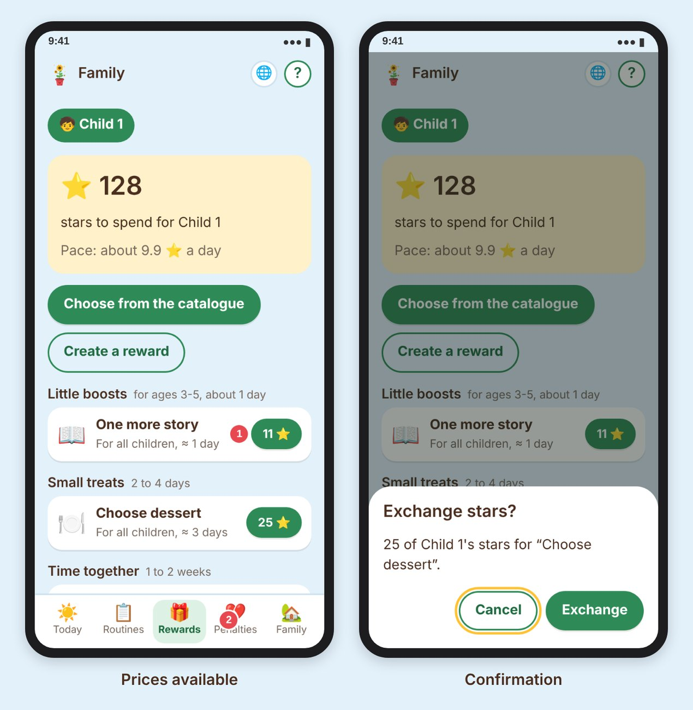
- Price in solid green: the child has enough stars. Tap the price to exchange.
- Price with a light outline: not enough stars yet, and the button does nothing.
Confirm with Exchange: the price is taken from the balance and the message “Reward exchanged” appears. The reward stays in the list and can be exchanged again later.
The child can also exchange it themselves from their phone (part 4).
Each exchange is recorded in the History at the bottom of the Rewards tab, with the date, the price and who made it. A parent can cancel it (1) from this list: after confirming, the stars are given back to the child.
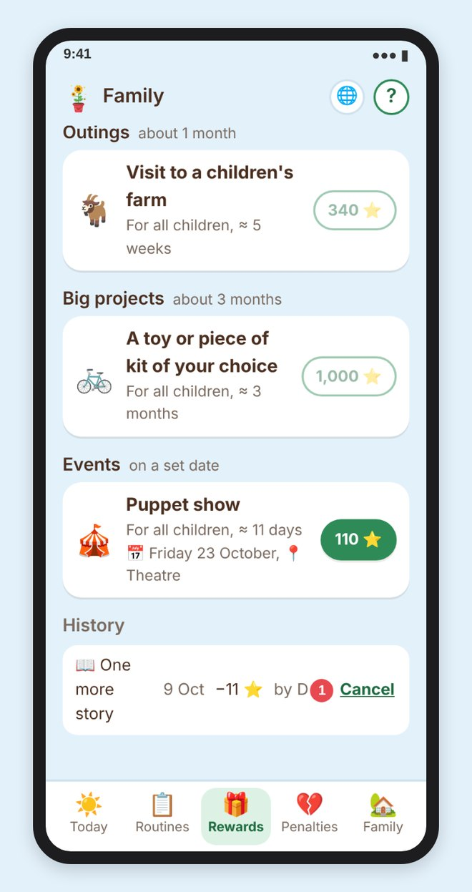
Tapping a reward card (outside the price) opens it for editing or deleting.
If the child's pace changes by more than 20% (routines added or deleted), a banner offers to recalculate the prices.
Holiday or illness
A break makes days neutral: they count neither for nor against the flower. Nothing is lost during a holiday, an illness or a weekend at the grandparents'.
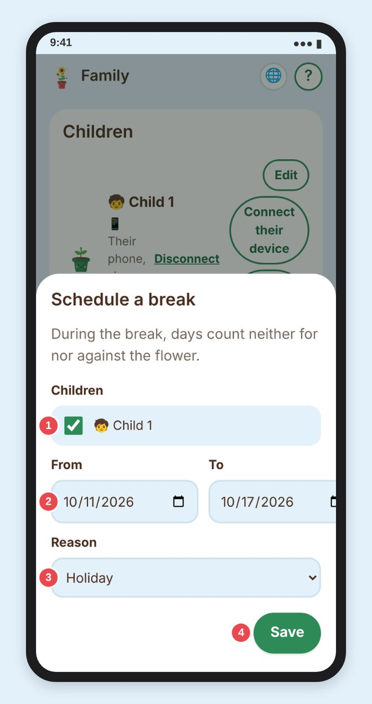
- Family, Holiday or illness breaks section, then Schedule a break.
- Children (1): tick the child or children concerned.
- From and To (2): the first and last days are included. The end must be after the start.
- Reason (3): holiday, illness or other.
- Save (4).
The break then appears in the section's list, with the child, the reason and the dates. Delete cancels it: the days concerned count normally again. A break can be scheduled in advance or recorded afterwards, for example once an illness is over.
4 The child's side
This part shows what the child sees on their phone or in child mode (part 2d). Go through it with them the first time. The child's screens talk to them directly (“My routines”, “My garden”).
| Tab | What they do there |
|---|---|
| My routines | Tick what they've done and start a timer challenge. |
| Rewards | See what they can get and how many stars they still need. |
| My garden | Follow their flower, the season's flower bed and the year's garden. |
| Badges | See the badges they've earned and the next ones. |
The child can't change anything: not the routines, the prices or the broken stars. The padlock at the top is for parents.
My routines
The opening screen shows the day's routines sorted by time of day: one-offs, morning, day, evening.
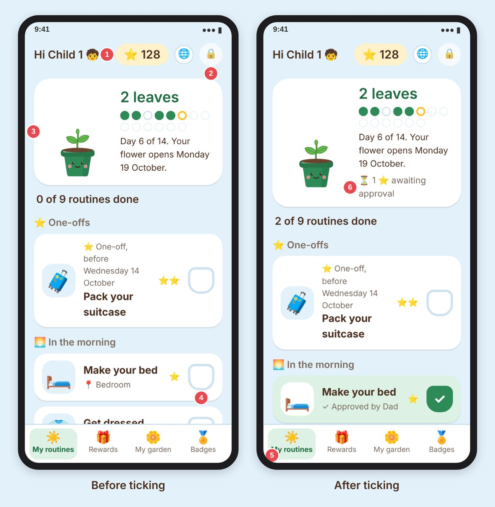
- The stars to spend.
- The padlock: for parents (parent code or a little sum).
- The current flower: its stage, a circle for each day and the date it opens.
- The tick box: the child taps it when the routine is done.
- The routine turns yellow with an hourglass: “Your parents will approve”.
- The stars awaiting approval show under the flower; they join the balance once a parent approves them.
The child can untick as long as a parent hasn't approved. Without internet, ticks are saved on the phone and sent as soon as the connection is back.
The timer challenge
A routine can have a timer (set by the parent in the routine, part 2b). A yellow X-min challenge button then appears under the routine.
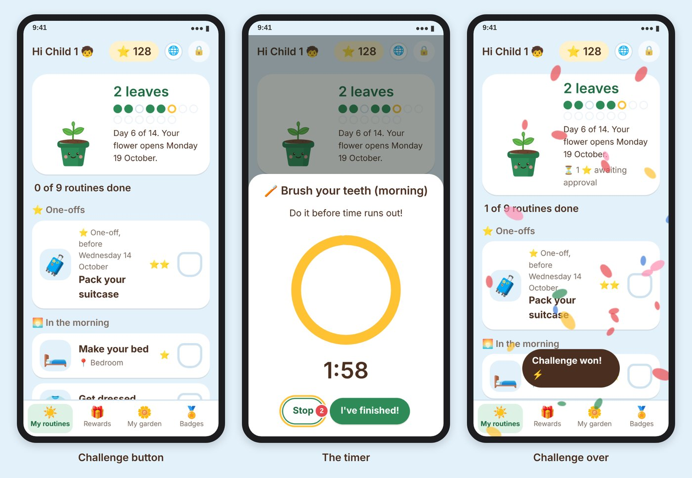
- The child taps 2-min challenge: the timer starts.
- When they've finished, they tap I've finished!. Before the time is up, the message “Challenge won” appears.
- The routine is ticked and goes for approval as usual.
Stop stops the timer without ticking. A won challenge doesn't give an extra star, but it counts towards the “Challenges” badges, and the parent sees it in the “To approve” section (“timer challenge won”).
Rewards on the child's side
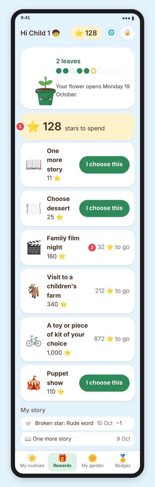
- The stars to spend at the top.
- X ⭐ to go: what's still needed for each reward. When there are enough stars, the text becomes an I choose this button.
When the child has enough stars:
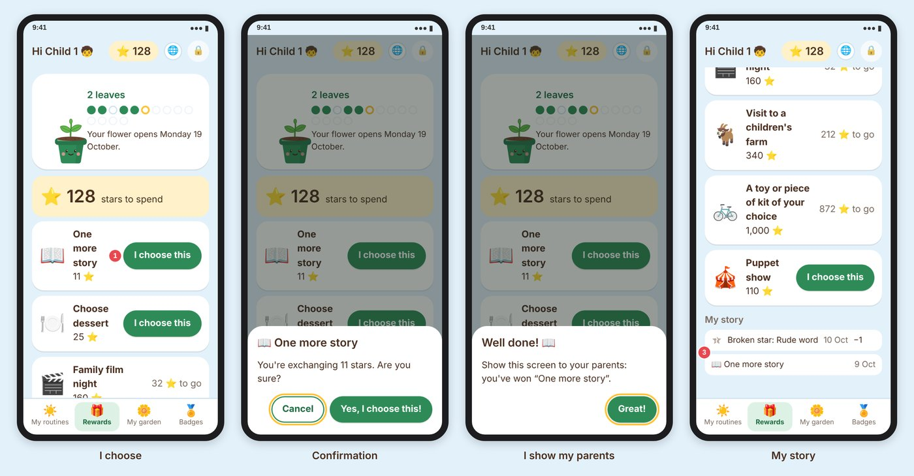
- They tap I choose this, then confirm with Yes, I choose this!. The stars are taken straight away.
- A Well done! screen asks them to show it to their parents.
- The reward is added to My story (3) at the bottom of the tab.
This step needs the internet. The parent sees the exchange in the Rewards tab history and can cancel it if needed (part 3).
My garden and settings
The garden shows how far the child has come, beyond the current flower.
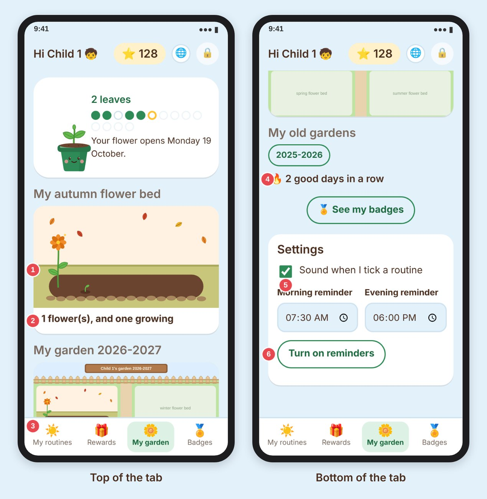
- The season's flower bed: the season's flowers, one per fortnight.
- Counter: finished flowers and the one growing.
- The year's garden: four flower beds, from autumn to summer. The year changes on 23 September.
- Streak: the number of good days in a row.
- Sound when a routine is ticked: can be turned off.
- Morning and evening reminders: choose the times, then Turn on reminders, and accept notifications.
| Flower | Share of good days in the fortnight |
|---|---|
| A big flower | 90% or more |
| A lovely flower | 65% or more |
| A little flower | 35% or more |
| A pretty bud | less than 35% |
A good day = at least 75% of the day's scheduled stars approved. Days without routines or on a break count neither for nor against. Each fortnight runs from the first to the last day of the family's week, so two weeks.
Badges
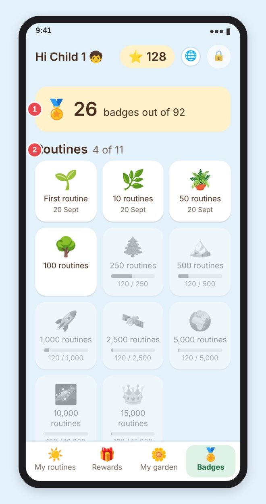
- Total: badges earned out of 92.
- Categories: each category shows its progress.
An earned badge is in colour with its date. The others are greyed out with a progress bar (0 / 10, 0 / 50…). The milestones go a long way, up to 15,000 routines, to last for years. Broken stars never take a badge away. The “Perfect week” and “Perfect weekend” badges follow the family's week and weekend days.
5 Settings
The settings are at the bottom of the Family tab. They are for parents. Some apply to the whole family, others only to the phone you set them on:
| Setting | Applies to |
|---|---|
| Week and time zone | The whole family |
| Automatic approval | The whole family |
| Reminders | This phone (each parent turns on their own) |
| Language | This phone |
| Printable planner | The whole family |
| Parent code | This phone |
| Backup | The whole family |
| Family name | The whole family |
Week and time zone
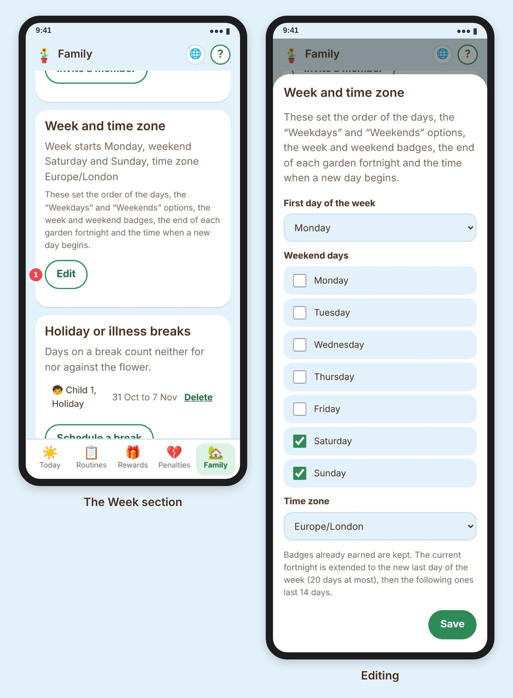
- Edit opens the same window as when the family was created (part 1).
Badges already earned are kept. If you change the first day of the week, the current fortnight is extended to the new last day of the week (20 days at most), then the following fortnights last 14 days.
Automatic approval at midnight
When the child ticks a routine, their stars wait for your approval. This setting decides what happens if nobody approves during the day.
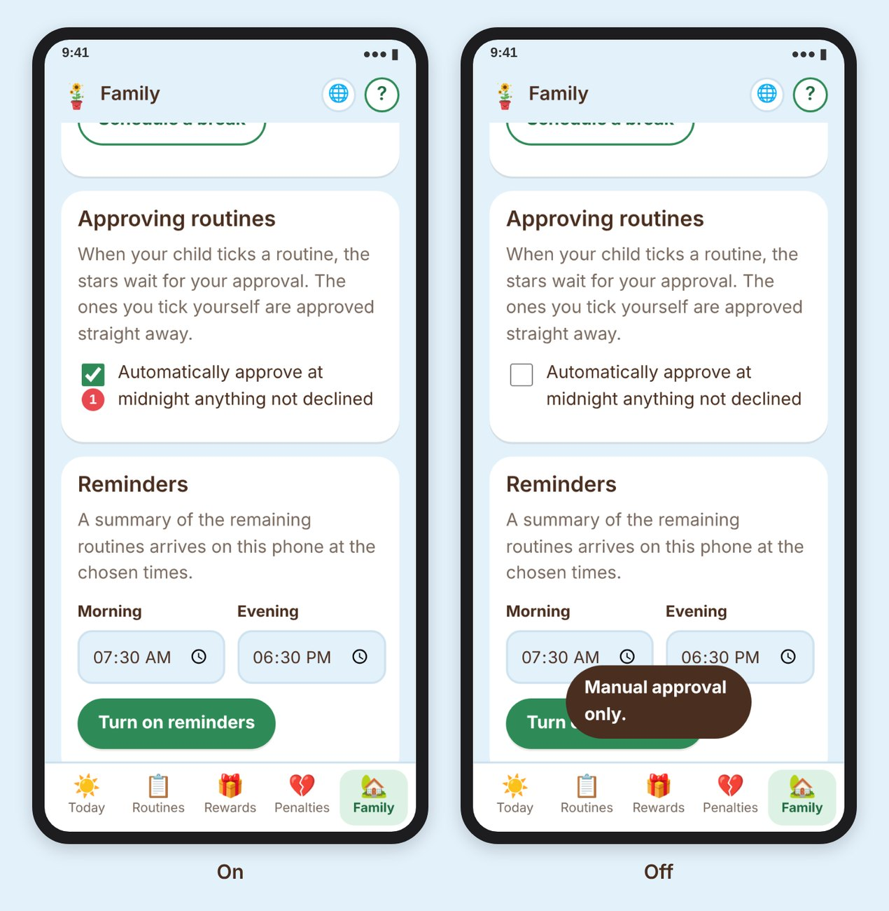
| The box (1) | At midnight, anything still awaiting approval… |
|---|---|
| Ticked (default) | is approved automatically. The child isn't penalised when parents forget. |
| Unticked | keeps waiting for your decision. Message: “Manual approval only”. |
Either way, what you tick yourself is approved straight away. Tip: leave the box ticked unless you want to check every routine.
Reminders
At the chosen times, a notification summarises the remaining routines, in this phone's language. Each parent turns them on on their own phone; the child has their own reminders in “My garden” (part 4).
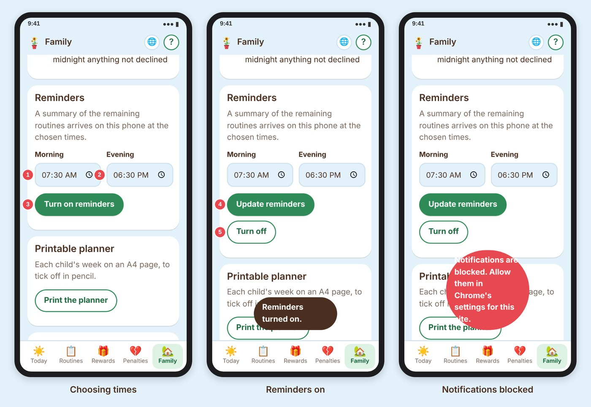
- Morning: time of the first reminder.
- Evening: time of the second.
- Turn on reminders, then Allow when Chrome asks for permission to send notifications.
- Update reminders: after changing a time.
- Turn off: stops reminders on this phone.
If you answered “Don't allow”, the app shows “Notifications are blocked”. To fix it: in Chrome, tap the padlock to the left of the address, then Permissions, then set Notifications to Allow. Then go back to “Turn on reminders”.
Printable planner
For the fridge or for a child without a phone: the current week on an A4 page, to tick off in pencil.
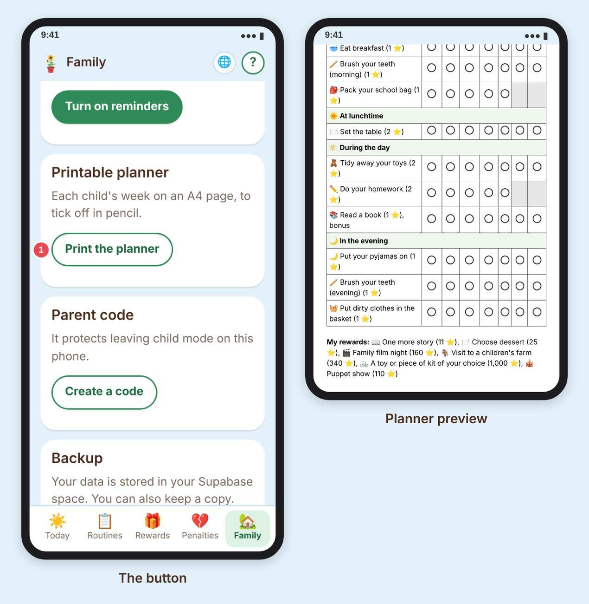
- Tap Print the planner (1). With several children, choose whose planner to print.
- Android opens the print preview: choose your printer, or Save as PDF to send it.
The page shows the routines by time of day, with a circle for each scheduled day (grey boxes are days without that routine), starting from the first day of the family's week, and lists the rewards with their prices at the bottom. Ticks on paper don't go into the app: they need to be entered from the Today screen (up to 6 days back).
Parent code, backup and account
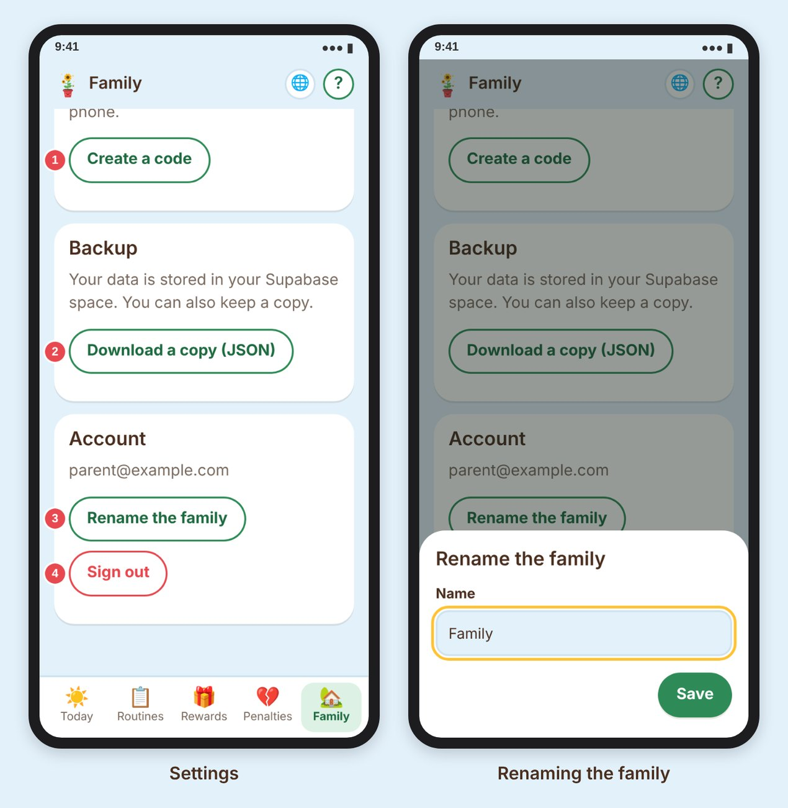
- Parent code: Change the code, then 4 digits. It protects leaving child mode on this phone (part 2d). Without a code, the app asks a little sum instead.
- Download a copy (JSON): a file with all the family's data (children, routines, stars, rewards, broken stars, badges, flowers, breaks), saved in Downloads. Worth doing every three months, just in case.
- Rename the family: changes the name shown at the top of the app for all members.
- Sign out: signs your account out on this phone. The data stays online; just sign in again with your e-mail and password.
The account's e-mail is shown above the buttons.